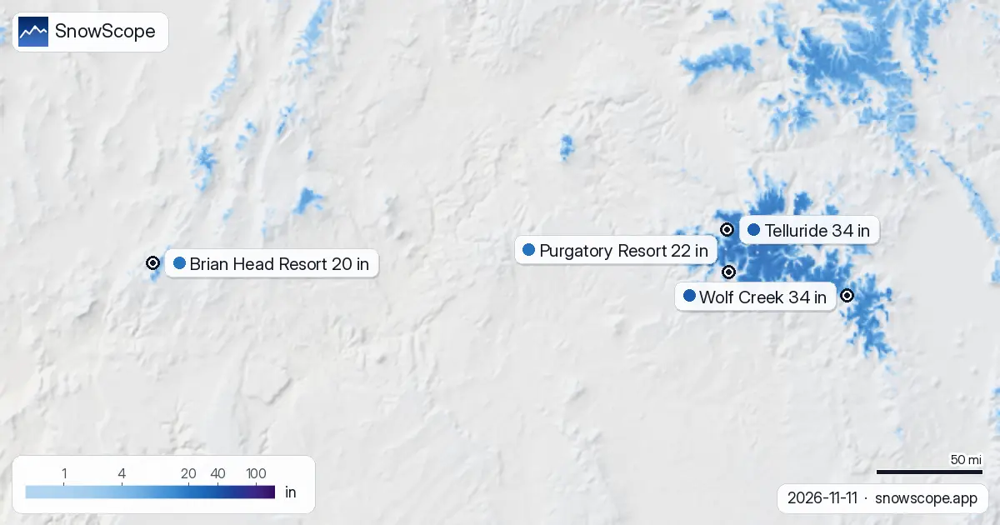

Wo am Wochenende im US-Westen Ski fahren? Telluride, Wolf Creek und Purgatory Resort
Wo solltest du im US-Westen Ski fahren? Drei Zutaten, eine Auswahl: Heutige Schneehöhe, Neuschnee der letzten 72 Stunden und Prognose zeigen auf Telluride, Wolf Creek und Purgatory Resort. An der Spitze dieser Liste: Wolf Creek, etwa 34 in (87 cm) weit oben. Dann Telluride 34 in (86 cm) und Purgatory Resort 22 in (57 cm). Sicherheit: gut für den Trend, geringer für jede einzelne Zahl.
Die Live-Schneeprognose für Telluride in der SnowScope-AppSchneehöhen, Pulverschnee-Alarme und 3D-Karte, gratis.
Die Prognose in Kürze
Prognose bis zum 14. November: 4 in (9 cm) in Telluride, 3 in (8 cm) in Wolf Creek und 5 in (12 cm) in Purgatory Resort. Die späteren Tage mit Vorsicht lesen.
Prognosen für einige Tage können sich ändern: Schau am Tag vor der Abfahrt noch einmal auf die Karte.
| Skigebiet | Schneehöhe | Neuschnee, 72 h | Erwartet, nächste Tage | Gipfel |
|---|---|---|---|---|
| Telluride | 34 in (86 cm) | 0 in (0 cm) | 4 in (9 cm) | 12.507 ft (3.812 m) |
| Wolf Creek | 34 in (87 cm) | 0 in (0 cm) | 3 in (8 cm) | 11.762 ft (3.585 m) |
| Purgatory Resort | 22 in (57 cm) | 0 in (0 cm) | 5 in (12 cm) | 10.797 ft (3.291 m) |
| Brian Head Resort | 20 in (52 cm) | 0 in (0 cm) | 6 in (14 cm) | 10.909 ft (3.325 m) |

Check der Schneefallgrenze
Am 11. November liegt die Nullgradgrenze in Telluride bei 11.483 ft (3.500 m) bis 13.484 ft (4.110 m), über dem höchsten Punkt des Skigebiets (12.507 ft (3.812 m)): Regen oder nasser Schnee könnte auf alle Hänge fallen.
Eine Faustregel, die selten falsch liegt: hoch und nordseitig hält Schnee, südseitig verliert ihn zuerst.
Erste Wahl
Telluride nach Höhe, aus unserem Modell: Gipfel 38 in (96 cm) (12.507 ft / 3.812 m), Mitte 2 in (6 cm) (10.620 ft / 3.237 m), Tal 0 in (0 cm) (8.734 ft / 2.662 m). Telluride: schneebedeckt in der letzten klaren Ansicht, am 9. November.
Drei Höhen in Wolf Creek, drei Zahlen: 19 in (47 cm) am Gipfel (11.762 ft / 3.585 m), 15 in (37 cm) an der Mittelstation (11.010 ft / 3.356 m), 3 in (8 cm) im Tal (10.262 ft / 3.128 m). Klarer Himmel über Wolf Creek am 3. November, und das Bild zeigt eine Schneedecke.
Purgatory Resort: schneebedeckt in der letzten klaren Ansicht, am 9. November.
Lawinengefahr und Sicherheit
Die offizielle Einstufung für das Gebiet um Telluride ist heute 1 auf der fünfstufigen Skala (Colorado Avalanche Information Center).
Lies vor dem Freeriden oder einer Skitour den offiziellen Lawinenlagebericht (Links unten).
Tipps für Skifahrer
- Schnee auf der Karte heißt nicht, dass das Skigebiet offen ist: Prüfe Lifte und Öffnungstermine auf der Website des Skigebiets.
- Kleine Skigebiete neben den großen Namen bekommen oft denselben Sturm und kürzere Schlangen. Schau sie dir zuerst auf der Karte an.
- Früher Schnee ist dünn. Bleib auf offenen, präparierten Pisten: Steine und Gras liegen oft knapp darunter.
- Satellitenbilder zeigen es jeden Winter: Schnee bleibt weit oben und an Nordhängen am längsten und verschwindet zuerst an Südhängen.
- Stell in der SnowScope-App einen Pulverschnee-Alarm ein, damit du weißt, wann Telluride Neuschnee bekommt.
Zu diesen Zahlen
Die Schneehöhen der Skigebiete sind der meiste Schnee in den oberen Hängen laut SnowScope-Schneemodell (etwa 1 km, Lauf vom 11. November); es sind Schätzungen für eine Fläche, keine Messung an einem Punkt. Werte von Messstationen sind Messungen am angegebenen Tag. Prognosen können sich ändern. Lies vor dem Freeriden immer den offiziellen Lawinenlagebericht.
Offizielle Lawinenlageberichte: Colorado Avalanche Information Center
Diesen Bericht zitieren
Für Forschung, Lehre oder Presse: Zahlen und Grafiken sind unter CC BY 4.0 mit dieser Quellenangabe frei nutzbar.
SnowScope (2026), Wo am Wochenende im US-Westen Ski fahren? Telluride, Wolf Creek und Purgatory Resort, https://snowscope.app/blog/de/2026/11/us-west-where-to-ski-this-weekend-11-november-2026.html, abgerufen am 2026-11-11
SnowScope (Atlas Labs). (2026, November 11). Wo am Wochenende im US-Westen Ski fahren? Telluride, Wolf Creek und Purgatory Resort. SnowScope snow reports. https://snowscope.app/blog/de/2026/11/us-west-where-to-ski-this-weekend-11-november-2026.html
BibTeX
@misc{snowscope2026uswestwheretoskithisweek,
author = {{SnowScope (Atlas Labs)}},
title = {Wo am Wochenende im US-Westen Ski fahren? Telluride, Wolf Creek und Purgatory Resort},
year = {2026},
month = nov,
howpublished = {\url{https://snowscope.app/blog/de/2026/11/us-west-where-to-ski-this-weekend-11-november-2026.html}},
note = {Published 2026-11-11 18:44 UTC; accessed 2026-11-11}
}· CC BY 4.0 · Methoden, Daten und Werkzeuge →
Telluride: Schnee und Temperatur nach Höhe, dieser Winter vs letzter (Werkzeuge) →
Telluride folgen
Gratis: eine Nachricht, wenn Neuschnee kommt, und jeden Morgen die Vorhersage.
Weitere Schneeberichte

Ist das ein guter Winterstart im US-Westen? 5 Skigebiete im US-Westen, 46 frühere Winter, ein Datum: So schneidet heute ab. Deutlich über dem …

Telluride Schneedecke: 45 in Auflage in den oberen Hängen (8. November). Am meisten Schnee im US-Westen liegt in Kendall Mountain: etwa 47 in …

Wo liegt heute im US-Westen der meiste Schnee? Wenn du heute den meisten Schnee im US-Westen willst, schau nach Wolf Creek (USA): etwa 35 in (90 cm) …